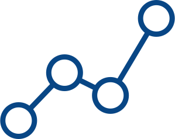

{% extends 'base.html' %}
{% block page_content %}
Sourcing and Identifying Problems
- Establish and build relationships with community-based organizations and Business Improvement Districts (BIDs)
- Workshop identified issues with our ecosystem partners to ensure a participatory project creation process
Team Formation
- Bring in partners who could offer relevant project resources by leveraging the Grid's ecosystem of 130+ organizations in urban tech

Data Collection and Analysis
- Leverage the Response Lab's consortium of academic partners and data scientists to source existing relevant data
- Partner with neighborhood associations to build a database of community-level insights informing community solution development
Solution Building
- Develop user-friendly tools and platforms that directly address specific community needs
- Build iterative solutions from ongoing community research, feedback, and data insights with the goal of creating tools that are both targeted to specific organization needs and scalable to wider communities
Solution Deployment
- Implement solutions with hands-on training and understanding of how solutions interact with existing processes
- Monitor defined performance metrics and direct community feedback to identify opportunities for continued solution improvements
Solution Scaling
- Scale solutions to other neighborhoods in New York that would be ripe for implementation
- Hold knowledge sharing events such as roundtables to garner potential opportunities to scale to other cities in the US
- Adapt solutions as necessary to assimilate into other neighborhoods' unique contexts and needs
{% endblock %}